Quadratic shell benchmark — reference-anchored comparisons
Ary · Independent Researcher · Personal Research · Rev 4 · 19 October 2026
This supersedes the invalid 2-005 A/B plate overlays and older 2-009 unsupported-foundation figures. Includes available published data and diagnostic curves with explicit status.
Method
- Independent reference is mandatory to claim physical accuracy; present Nastran/reference and MYSTRAN/reference separately.
- For 2-005 use 2×10-in C/D CSI references (12.97, 16.95, 2.60, 7.25 in).
- For 2-008 compute frequencies as
f=1/T, not CSI period-based percentage errors.
- For 2-014 radial/tangential axes and local shell moments must be audited; one-mesh figures are bar charts.
- For 2-016–2-017 signed buckling eigenvalues are not automatically stress/force; assess prestress baseline, sign, and mode MAC.
- For reference exactly 0, report absolute residual. Preserve missing data and flags; don't interpolate missing mesh runs.
- Distinct markers, line patterns and labels identify different element formulations, even if curves overlap.
Case index
- 2-001: Membrane/bending patch; pointwise recovery — Joint and element stresses require correct frame; Q8 transverse shear recovery LC2 under review.
- 2-002: Fixed A/Q8 and E/T6 with midpoint BC — Single source mesh each; midpointSPC126, six load cases, bar errors and retained pivot warnings.
- 2-003: Plate/shell validation — Q8 7-mesh full-clamp convergence and 6×1 values; T6 support parity pending.
- 2-004: Fixed-source twisted beam Q8/T6 — Source12×2; root midsides clamped, T6 two triangles per quad; tip-load sensitivity bars and explicit MACQ8D SPCF-output failure. No convergence study.
- 2-005: 2×10 in C/D plate quarter convergence — Corrected reference: C uniform 12.97 in; C point 16.95 in; D uniform 2.60 in; D point 7.25 in. T6 point-load under investigation.
- 2-006: Scordelis-Lo roof — Free-edge error bars and seven-point displacement profiles re-exported; moment axes pending.
- 2-007: S2K-based hemispherical shell thick convergence — Complete Q8/T6 native OP2, nx4/8/16/32; independent-reference ratios and errors, 44 matching runs.
- 2-008: Thick plate modal / diagonal CONM2 — CSI five independent periods: 0.01723, 0.00704, 0.00281, 0.00219, 0.00193 s; plot f/fref.
- 2-009: Plate on elastic foundation — EXCLUDED invalid older model; foundation A/B stiffness must be corrected and rerun.
- 2-010: Shell benchmark — No verified independent-reference figure in consolidated dataset.
- 2-012A: Fixed6×96 annulus, thick shear/bending — One source mesh; midpoint inner support and consistent line load; targetUZ−0.00534in. Nastran9137 failures and BAILOUT warnings retained.
- 2-013: Thermal constant through thickness — 2-013A Ux=0.000132, Uy=0.000066 in at joint8; 2-013B sigma_xx=sigma_yy=-733.33 psi, with measured GPSTRESS.
- 2-014: Annular thermal gradient — 9×16 CSI thick reference: Uz=0.01931 in, R2=0.00352 rad, M11=-2.181 and M22=-4.406 kip-in/in; Python-generated 28×32 Q8 / 1792 T6 triangles is not the CSI mesh.
- 2-015: Shell benchmark — Pending independent-reference and run metadata verification.
- 2-016: Out-of-plane buckling — CSI shear/bend references t=1: 425/1165 ksi; t=0.01: 0.0425/0.1165 ksi. Buckling lambda to critical stress requires load normalization, including t=1 provisional.
- 2-017: In-plane buckling — CSI reference Pcr=127.91 kip; lambda requires load basis and physical buckling mode matching.
Reference tables
| CSI |
Output |
Independent reference |
Units |
Qualification |
| 2-005 C simple uniform |
center Uz absolute |
12.97 |
in |
quarter model 2×10 full plate |
| 2-005 C simple point |
center Uz absolute |
16.95 |
in |
same |
| 2-005 D fixed uniform |
center Uz absolute |
2.60 |
in |
same |
| 2-005 D fixed point |
center Uz absolute |
7.25 |
in |
same |
| 2-013 A |
Ux/Uy joint 8 |
0.000132 / 0.000066 |
in |
free expansion |
| 2-013 B |
sigma_xx/sigma_yy joint 8 |
−733.33 / −733.33 |
psi |
restrained; OGS audit |
| 2-014 thick A |
Uz / R2 inner |
0.01931 / 0.00352 |
in / rad |
inner boundary |
| 2-014 thick A |
M11 outer / M22 inner |
−2.181 / −4.406 |
kip-in/in |
local axes |
| 2-016, t=1 |
tau_cr / sigma_cr |
425 / 1165 |
ksi |
load-basis audit before lambda overlay |
| 2-016, t=.01 |
tau_cr / sigma_cr |
0.0425 / 0.1165 |
ksi |
source Nastran missing |
| 2-017 |
Pcr |
127.91 |
kip |
reference vs eigenvalue needs load basis |
CSI 2-005
Detailed embedded values and audit
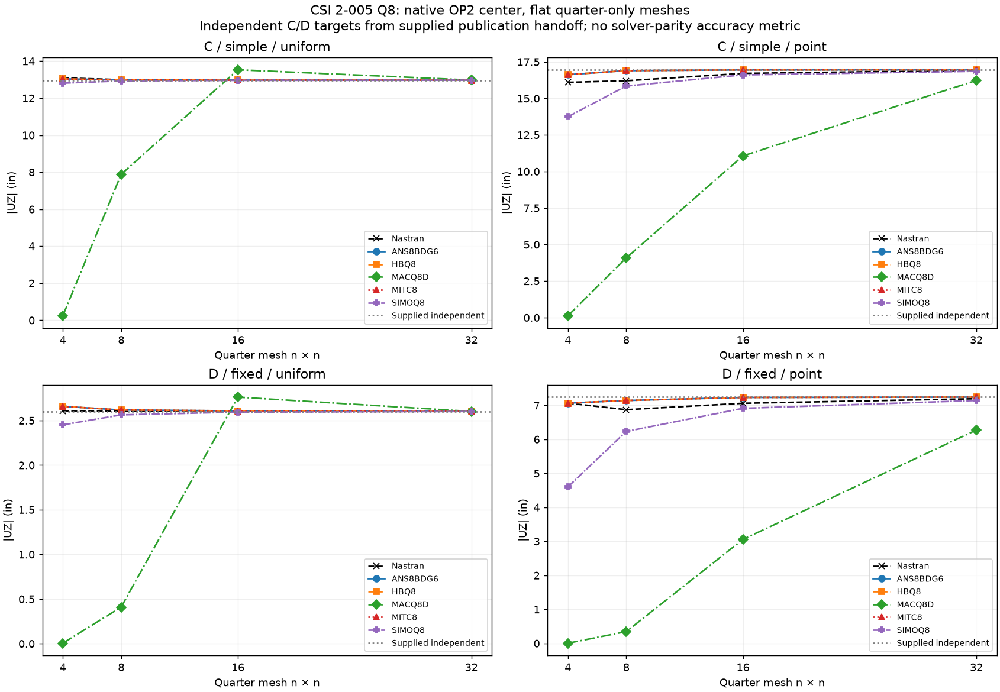
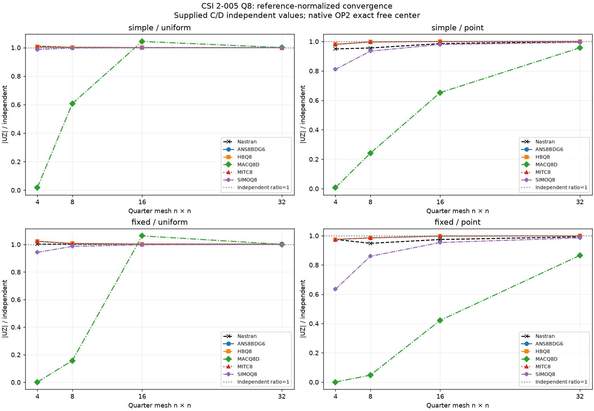
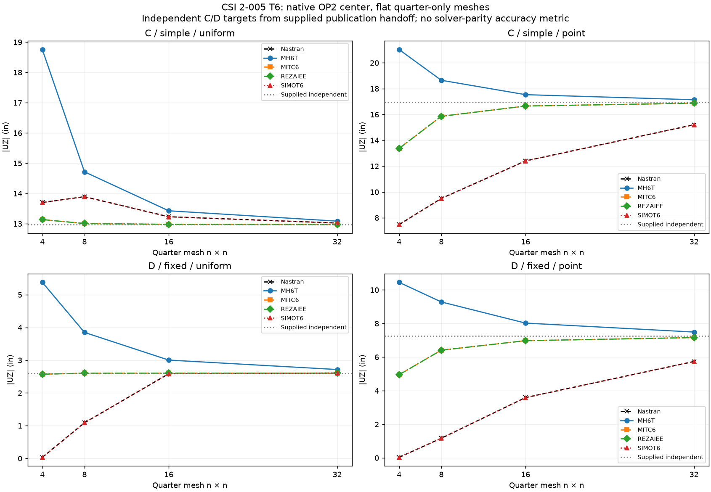
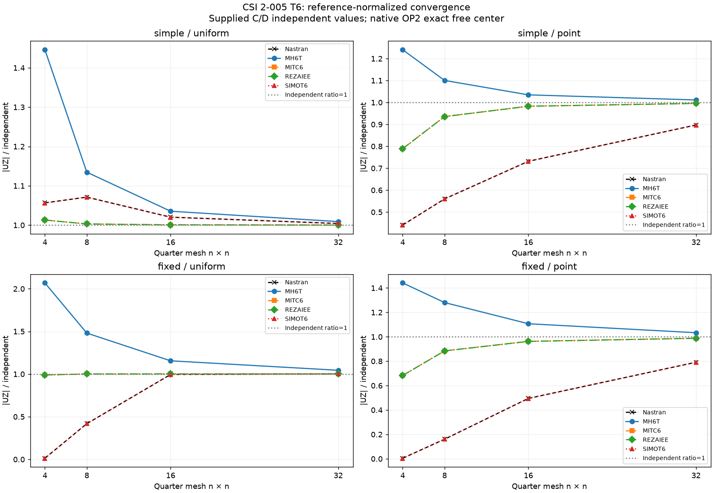
CSI 2-013
Detailed embedded values and audit
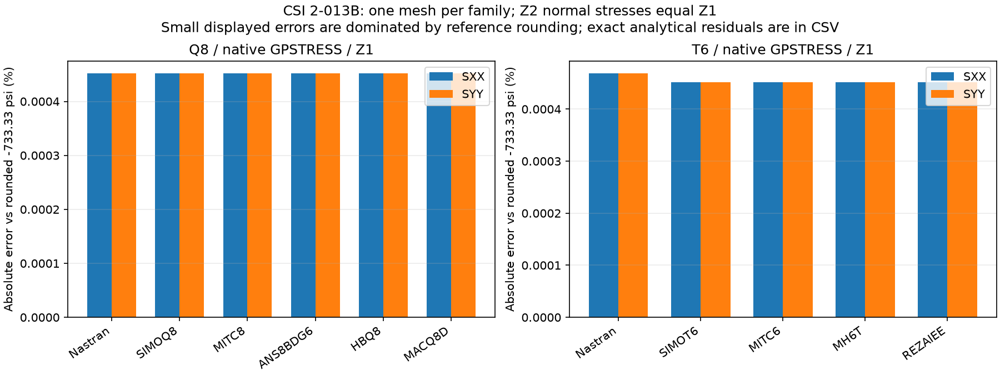
CSI 2-014
Detailed embedded values and audit
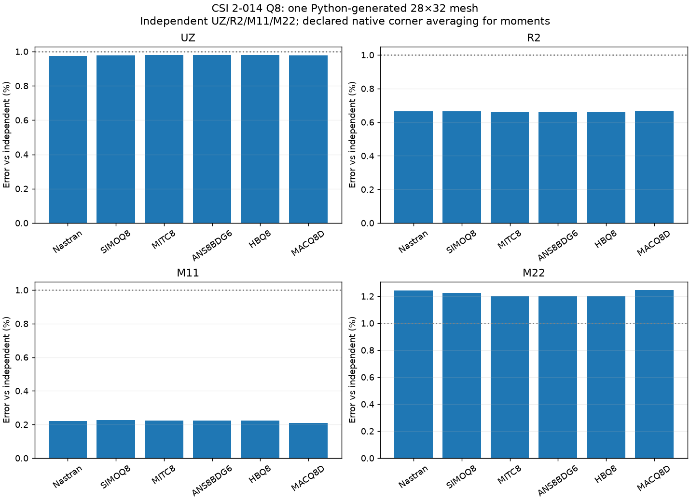
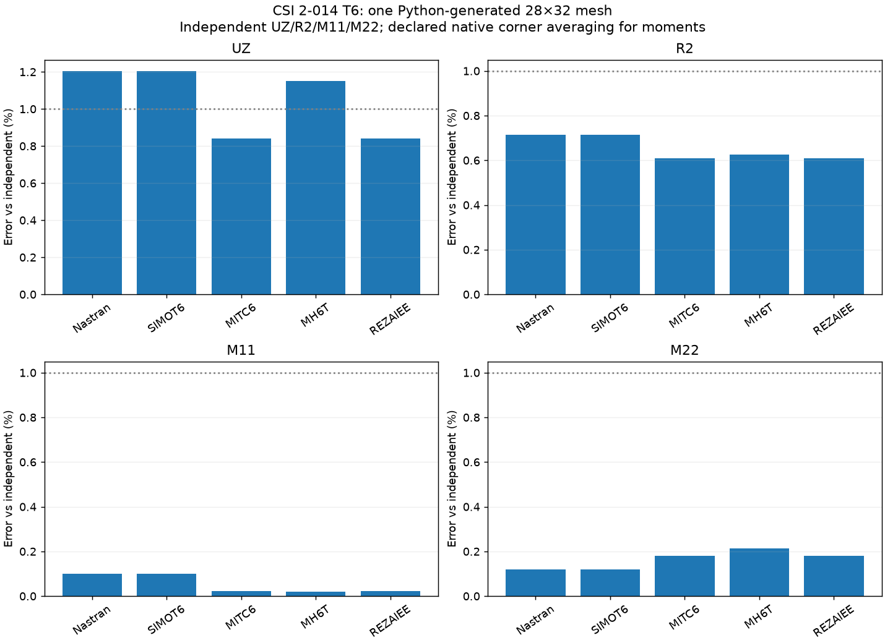
CSI 2-008
Detailed embedded values and audit
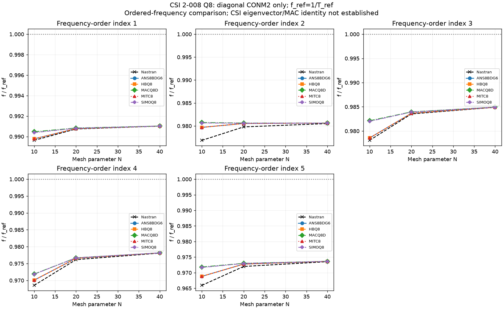
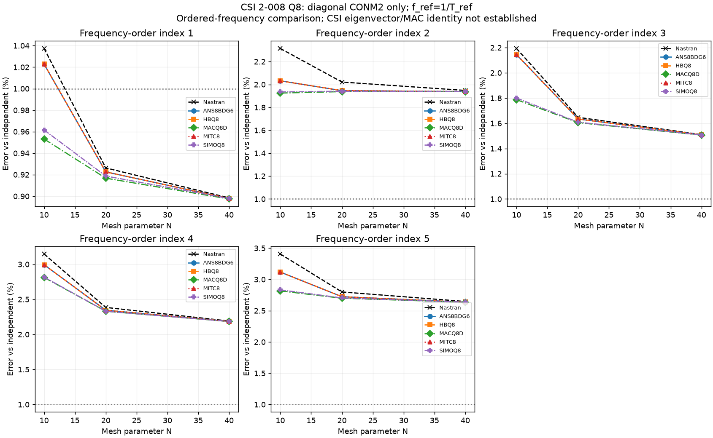
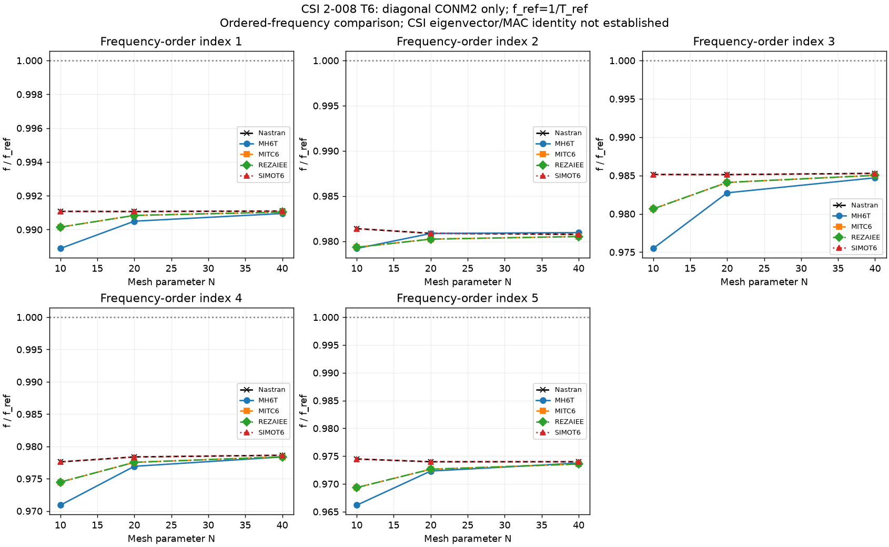
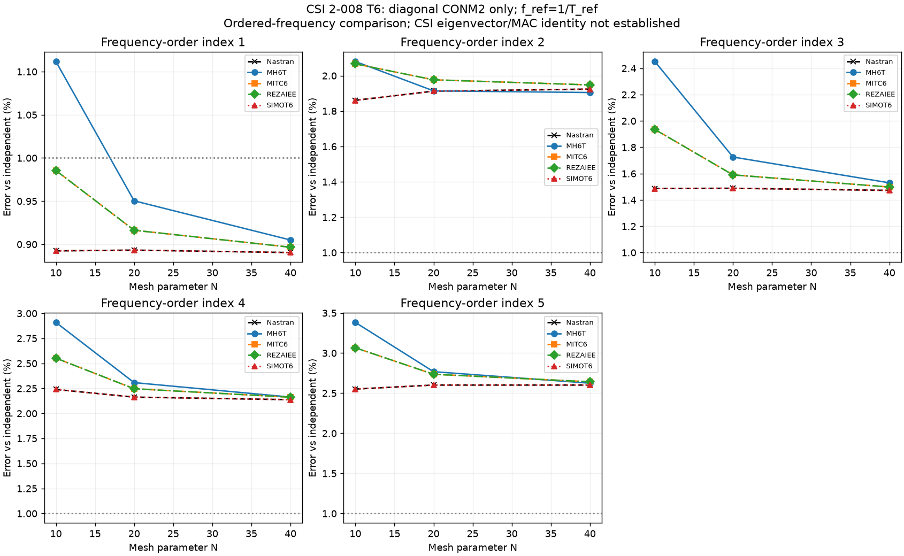
CSI 2-016
Detailed embedded values and audit
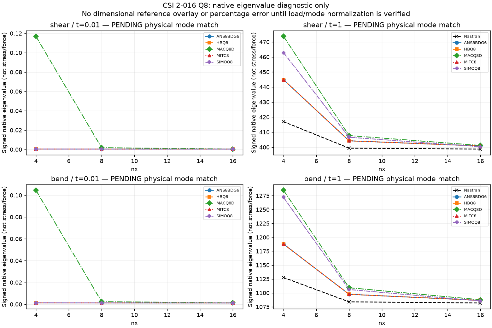
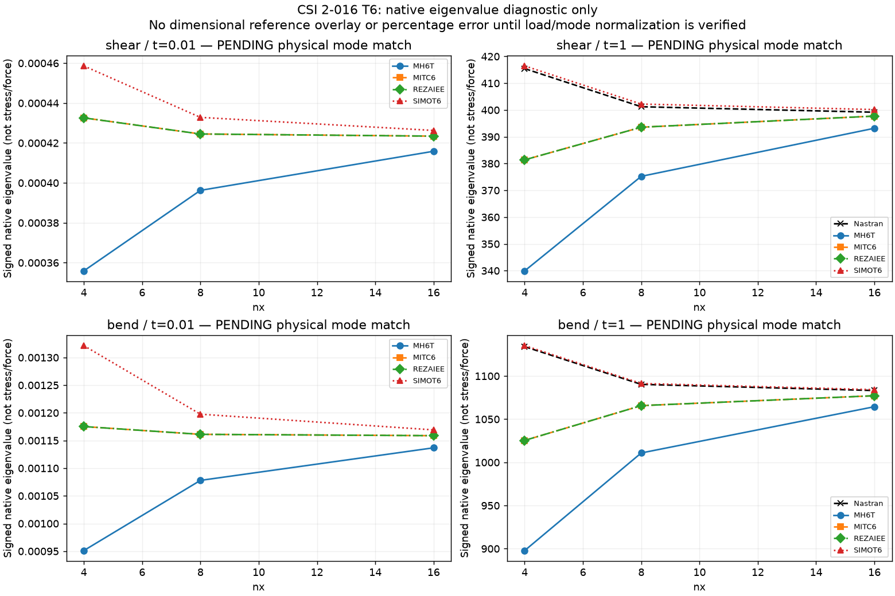
CSI 2-017
Detailed embedded values and audit
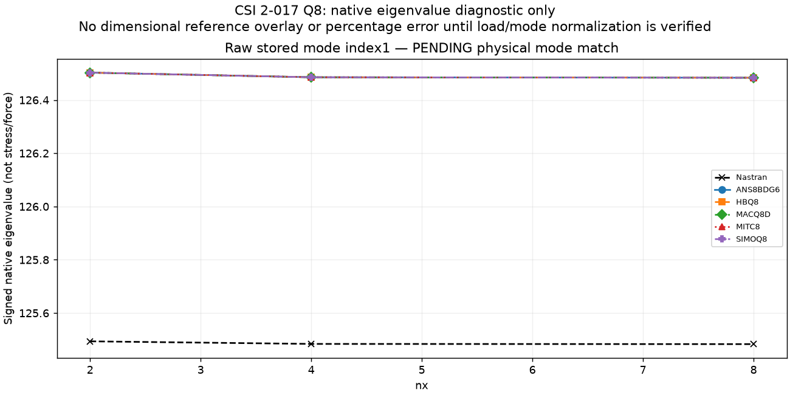
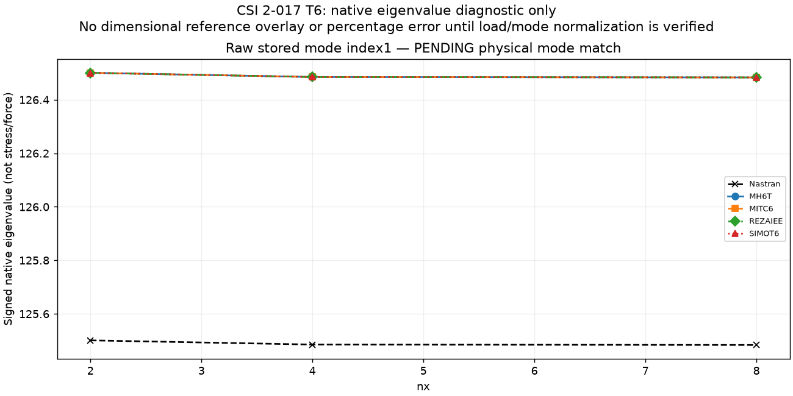
Exclusions and open issues
2-009 EXCLUDED (incorrect plate size/foundation); original 2-005 invalid A/B graphs SUPERSEDED; 2-002 under review for restraints/pivots; 2-016 t=.01 FAILED NASTRAN7340; native eigenvalue normalization remainsPENDING; 2-017 reference conversion conditional. No global ranking of elements is warranted by incomplete benchmarks.